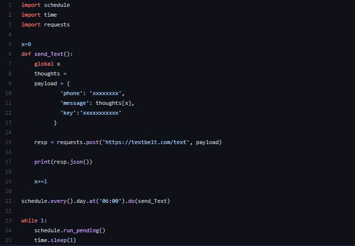

Archive | Python
Automatic Text Sender
This was a simple Python script with a scheduler that sends a text every morning at 6 AM using the Textbelt API.


It was a small fun build, but also the kind of thing that works well on a Raspberry Pi that can just stay on and run in the background.
Projects like this are simple on purpose sometimes. They solve one clear problem and are a good excuse to wire together scheduling and an external API.